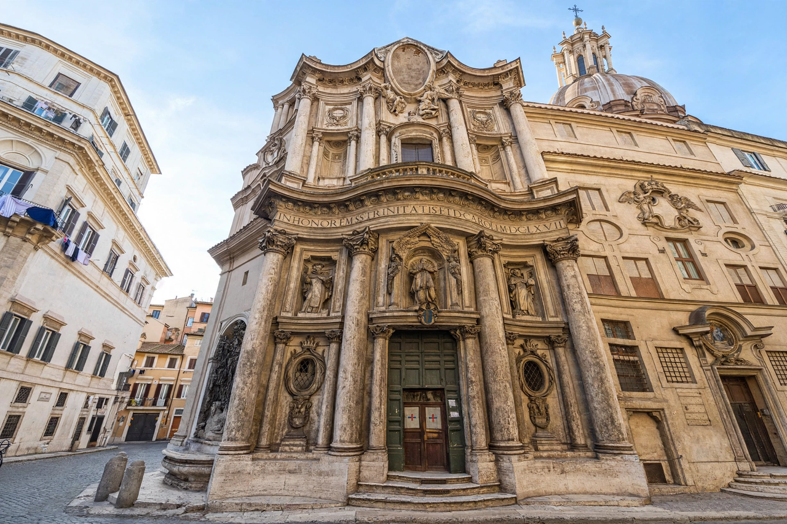

Francesco Borromini
From Wikipedia, the free encyclopedia

Francesco Borromini (25 September 1599 – 2 August 1667) was an Italian architect of the Baroque era, a master of complex geometric plans and undulating spaces. A stonemason's son from Ticino who rose in Rome as Gian Lorenzo Bernini's draughtsman and then his great rival, he built a small oeuvre of intensely inventive churches — San Carlo alle Quattro Fontane, Sant'Ivo alla Sapienza, Sant'Agnese in Agone — that transformed Roman architecture and still astonish by their spatial daring.
Career
Arriving in Rome in 1619, Borromini worked on St Peter's under Maderno and Bernini, chafing as assistant. His first independent commission, San Carlo (1638–41) — a whole church on a site as small as one pier of St Peter's — solved an impossible plan with an oval dome on a triangular geometric armature. Sant'Ivo (1642–60), church of the university, twists a Star-of-David plan into a spiralling lantern; at Sant'Agnese he remodelled the facade into a concave embrace of Piazza Navona opposite Bernini's fountain — the rivalry literally face to face.
Character and end
Melancholic, perfectionist and litigious, Borromini destroyed many drawings and, in a fit of illness and despair in 1667, fell on his own sword, dying days later. The Baroque's 'other genius' was eclipsed for centuries by Bernini's fame and Bernini-shaped art history, before twentieth-century scholarship restored him as perhaps the more radical intelligence.